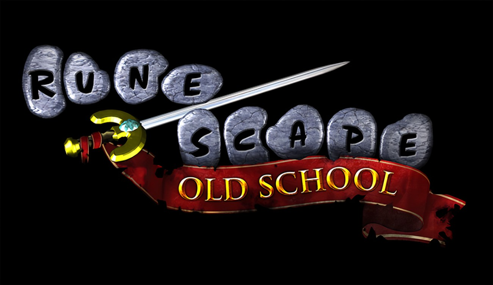
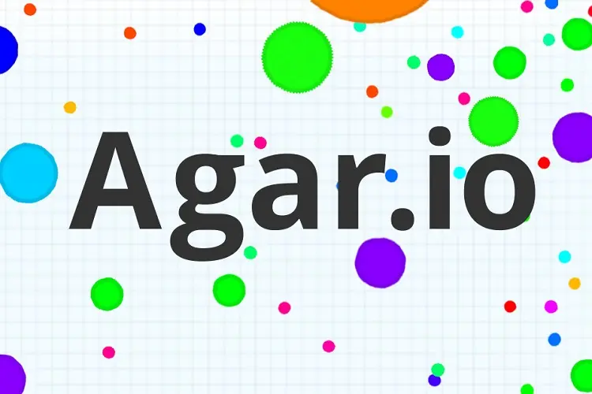

As the internet became more of a household commodity people began to realise that you could host a game entirely on a website rather than a specific download. While the main benefit of web games was the lack of downloads a common benefit was the typically low spec requirements of the games and the fact they were comparatively easy to make.
The Rise and Fall of Adobe Flash Player
Adobe produced Flash Player to create and run SWF (a proprietary file format that allows you to use both animations and code to create both GUI, games and pretty much anything else)
While Flash was used to create a plethora of browser games and apps it was frequently the target of hackers, which would use the software to infect many machines with malware easily due to the many glaring security issues in the software itself. Despite Adobe trying many times to fix the security issues they inevitability decided to announce the End-Of-Life for flash and "strongly recommends all users immediately uninstall Flash Player to help protect their systems."
Early 2000s: Browser MMOs
RuneScape
Jagex created what would become one of the biggest browser games ever. Originally RuneScape was created in Java but would eventually be ported to C++ as updates continued after time
Club Penguin

New Horizon Interactive (now known as Disney Canada Inc.) launched Club Penguin on October 24, 2005 which almost immediately became wildly successful, having 30 million users by 2007. In August of 2007 Disney offered to buy the Club Penguin franchise for $350,93 million, promising another $350 million if the game met the growth targets by 2009(although this didn’t happen due to the game not meeting the target.)
In 2015 the game began to decline in popularity, starting with layoffs and the German and Russian sites being removed. The entire game was fully shut down in March 29, 2017 for Disney to focus more on other IPs.
2015-2018: Growth of ".io Games"
After the mostly MMO dominated scene of web games ended a new genre began to rise, nicknamed ".io games" due to the fact .io is a relatively cheap domain so developers would use it. Popularised by a game called Agar.io the genre is usually massively multiplayer games with incredibly simply controls, usually just mouse pointing and a couple hotkeys at most.
While Agar.io is arguably the most popular .io game there are many other notable ones, such as Slither.io and Diep.io.
Modern Browser Games
Despite the fact computers have continued to grow in computing power exponentially, browser games have actually grown simpler over time. This is likely due to many reasons, such as lack of alternatives to Flash and its easier than ever to just download full games instead of needing a browser.
The majority of popular browser games are either incredibly simple ideas or online versions of board games. Examples of this trend are tetr.io (a Tetris clone with online functionalities), jklm.fun (trivia and word guessing games) and chess.com